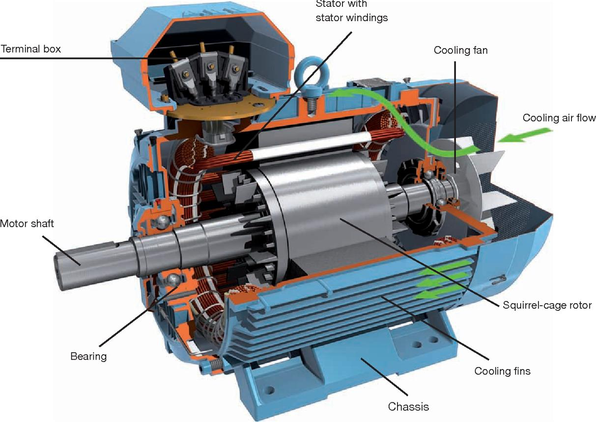
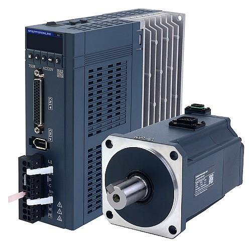
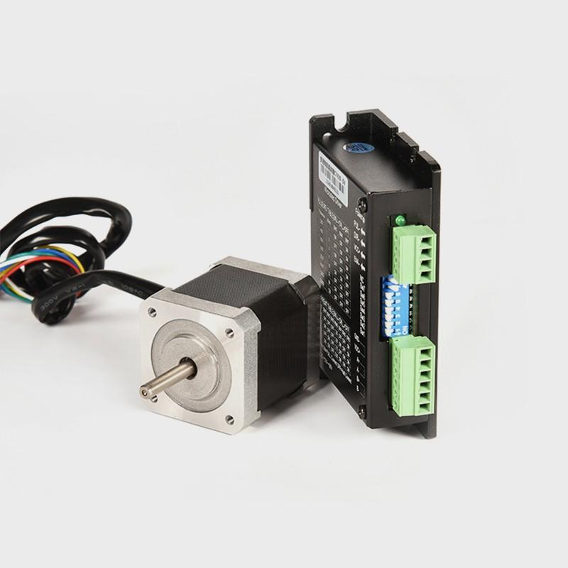

01_Motor_Types - Motor types: Induction, servo, stepper basics
1. Purpose of motor classification
An electric motor converts electrical energy into mechanical energy. In industrial automation, motors are selected according to the required speed, torque, positioning accuracy, dynamic response, load characteristics, and operating duty.
The three motor categories to understand first are:
- Induction motor: Used mainly for continuous rotation and general industrial machinery.
- Servo motor: Used for precise, closed-loop control of position, speed, and torque.
- Stepper motor: Used for discrete positioning where commanded electrical pulses produce corresponding motor steps.
These are not three interchangeable products. Each solves a different set of motion-control problems.
2. Basic motion terminology
| Term | Meaning | Industrial example |
|---|---|---|
| Speed | Rate of rotation, usually RPM | Conveyor running at 30 RPM |
| Torque | Rotational force, measured in Nm | Force required to move a loaded transfer unit |
| Position | Angular or linear location | Robot axis at a commanded position |
| Acceleration | Rate of change of speed | A transfer table accelerating from rest |
| Inertia | Resistance to changes in rotational motion | A heavy fixture mounted on a servo axis |
| Duty cycle | Pattern of operating time, loading, and rest | A motor starting every 20 seconds |
| Feedback | Measured information about actual motion | Encoder reporting motor position |
| Repeatability | Ability to return to the same position consistently | Indexer stopping at the same station |
| Resolution | Smallest distinguishable or commandable movement | Encoder counts or stepper microsteps |
Torque is not power. Torque describes rotational effort; power describes how quickly work is performed.
For rotating machinery:
Where:
- \(P\) = mechanical power in watts
- \(T\) = torque in Nm
- \(\omega\) = angular speed in radians per second
A motor may deliver high torque at low speed but relatively low power. This distinction matters when selecting motors for gearboxes, lifting systems, and positioning axes.
3. Induction motor

3.1 Definition
An induction motor is an AC motor in which electrical current in the rotor is induced by the magnetic field produced by the stator. It does not normally require an external electrical connection to the rotor in a squirrel-cage design.
Three-phase squirrel-cage induction motors are among the most widely used motors in industrial plants because of their rugged construction, economical operation, and relatively simple maintenance.
3.2 Main components
- Stator: Stationary part containing the electrical windings.
- Rotor: Rotating part in which current is induced.
- Air gap: Clearance between stator and rotor.
- Bearings: Support the rotating shaft.
- Cooling fan and frame: Remove heat and provide mechanical protection.
- Terminal box: Provides connections for the motor windings.
- Shaft: Transfers mechanical power to the driven equipment.
A squirrel-cage rotor consists of conductive bars connected by end rings. The bars resemble a cage, which explains the name.
3.3 Operating principle
- Three-phase AC supply energizes the stator windings.
- The stator produces a rotating magnetic field.
- The rotating field moves relative to the rotor conductors.
- This relative motion induces rotor current.
- The interaction between the magnetic field and rotor current produces torque.
- The rotor accelerates and drives the connected load.
The rotor must generally run below synchronous speed during normal motoring operation so that relative motion remains available to induce rotor current and produce torque.
3.4 Synchronous speed and slip
The synchronous speed of a motor's rotating magnetic field is:
Where:
- \(N_s\) = synchronous speed in RPM
- \(f\) = supply frequency in Hz
- \(P\) = number of stator poles
For a 50 Hz, four-pole induction motor:
If the rotor runs at 1440 RPM, slip is:
Here, \(N_r\) is the actual rotor speed.
Slip is necessary for torque production in a conventional induction motor. Under load, rotor speed typically decreases slightly as slip increases.
3.5 Common induction motor types
- Three-phase squirrel-cage induction motor: General industrial applications.
- Wound-rotor induction motor: Has rotor windings and slip rings; allows specialized starting or speed-control arrangements.
- Single-phase induction motor: Common in lower-power applications where three-phase supply is unavailable.
A geared motor is an ordinary motor combined with a gearbox. A brake motor includes a braking mechanism. These describe motor assemblies or configurations, not necessarily separate electromagnetic motor principles.
3.6 How an induction motor is controlled
| Method | Function | Typical application |
|---|---|---|
| DOL starter | Applies supply voltage directly to the motor | Small or suitably rated fixed-speed loads |
| Star-delta starter | Reduces starting current and starting torque during starting | Suitable motors and loads designed for this method |
| Soft starter | Controls voltage during starting and sometimes stopping | Pumps and other applications needing reduced electrical or mechanical stress |
| VFD | Controls output frequency and voltage to regulate speed | Conveyors, pumps, fans and variable-speed machinery |
| Vector-control VFD | Improves torque control and dynamic performance | More demanding speed and torque applications |
A VFD changes the electrical supply presented to the motor. It does not turn every induction motor into a precision positioning system automatically. Accurate position control may require additional feedback, suitable drive capabilities, and appropriate system design.
3.7 Advantages and limitations
Advantages
- Rugged and widely available.
- Generally economical.
- Relatively simple construction.
- Suitable for continuous industrial duty.
- Broad availability of replacement motors and service expertise.
Limitations
- Less suitable for demanding precision positioning without a suitable control system.
- Starting current can be high with direct-on-line starting.
- Cooling, insulation, bearings, and load conditions affect service life.
- Low-speed operation requires attention to cooling and motor torque characteristics.
3.8 Common industrial applications
- Conveyors and transfer rollers.
- Pumps and cooling-water systems.
- Fans and blowers.
- Compressors.
- Gearboxes and general machine drives.
- Auxiliary machine equipment.
4. Servo motor

4.1 Definition
A servo motor is used as part of a motion-control system designed to regulate position, speed, and/or torque accurately.
In industrial automation, a servo system typically consists of a motor, servo drive, motion controller, feedback sensor, and mechanical transmission.
Important distinction: “Servo” describes a controlled motion system, not one unique motor construction. Many modern industrial servo motors are permanent-magnet synchronous motors, although other motor constructions are also used.
4.2 Main components
- Motion controller or motion PLC: Calculates or commands the desired motion.
- Servo drive: Supplies controlled electrical power to the motor.
- Servo motor: Produces the required movement.
- Encoder or resolver: Measures motor position and, depending on the system, speed.
- Mechanical transmission: Gearbox, belt, coupling, ball screw, or other mechanism.
- Home and limit sensors: Provide reference and travel-limit information where required.
- Holding brake: Present on some motors to hold a load when stationary.
4.3 Servo system architecture
Motion PLC / Controller
|
| Position / Speed / Torque command
v
Servo Drive
|
| Controlled motor power
v
Servo Motor
|
v
Gearbox / Ball Screw
|
v
Machine Axis
|
| Mechanical movement
v
Encoder / Feedback
|
+------> Servo Drive / Controller
The actual feedback wiring and control division depend on the servo system. In many systems, the motor encoder connects directly to the servo drive, while the motion controller sends commands over a supported motion network.
4.4 Closed-loop control
A servo system compares the commanded motion with measured feedback.
Where:
- \(r(t)\) = commanded position or speed, as applicable
- \(y(t)\) = measured position or speed
- \(e(t)\) = control error
The controller and drive act to reduce the error within the limits of the system.
For example, if a transfer axis is commanded to move to position 500 mm but the measured position is 492 mm, the controller detects a position difference and continues controlling movement as appropriate.
If the axis cannot reach its target within the permitted error or time, the drive or controller may report a following error or positioning fault.
4.5 Servo operating modes
| Mode | Primary control objective | Example |
|---|---|---|
| Position control | Reach a commanded position | Index a fixture to a station |
| Speed control | Maintain a commanded speed | Control a rotating process |
| Torque control | Regulate motor torque | Specialized tension or force-control applications |
The available modes and how they are configured depend on the drive, controller, and application.
4.6 Feedback devices
Incremental encoder
- Reports relative movement through pulses or signals.
- The system typically needs a reference or homing operation to establish machine position after startup.
- Position retention across power loss depends on the complete system design.
Absolute encoder
- Reports an encoded position value.
- May retain position information across power loss, depending on encoder type and configuration.
- Single-turn and multi-turn encoders have different position ranges.
Resolver
- An electromagnetic position-feedback device.
- Common in industrial environments that require robust feedback sensing.
Encoder resolution is not the same as machine accuracy. Gearbox backlash, coupling compliance, mechanical wear, calibration, control tuning, and feedback placement can all affect actual machine positioning.
4.7 Important servo performance terms
- Rated torque: Torque the motor can deliver under specified continuous operating conditions.
- Peak torque: Higher torque available for limited periods within the manufacturer's ratings.
- Rated speed: Specified operating speed under stated conditions.
- Torque-speed curve: Describes available torque at different speeds.
- Following error: Difference between commanded and measured motion.
- Inertia matching: Relationship between motor inertia and the inertia of the driven load.
- Tuning: Adjusting control-loop parameters for stable, responsive operation.
- Backlash: Mechanical lost movement when transmission direction changes.
- Resonance: Oscillation caused by interactions among mechanical and control-system dynamics.
4.8 Advantages and limitations
Advantages
- Accurate position and speed control.
- Fast acceleration and deceleration when correctly sized.
- Strong dynamic performance.
- Controlled torque capability.
- Suitable for coordinated axes and complex motion profiles.
Limitations
- Higher equipment and integration cost in many applications.
- Requires suitable drive, feedback, cabling, configuration, and commissioning.
- Poor tuning or mechanical resonance can cause vibration and instability.
- Incorrect load sizing or excessive inertia can cause overload and following errors.
- Mechanical backlash can prevent the machine from achieving the accuracy expected from the encoder alone.
4.9 Common industrial applications
- Robot axes.
- CNC machine axes.
- Precision transfer and indexing systems.
- Electronic gearing and camming.
- Pick-and-place mechanisms.
- High-speed packaging and assembly equipment.
- Position-controlled fixtures and slides.
4.10 Common servo faults
| Fault or symptom | Possible causes | First checks |
|---|---|---|
| Following error | Jammed axis, excessive load, acceleration too high, poor tuning | Check mechanical movement, command profile and feedback |
| Servo overload | Excessive torque demand, wrong sizing, binding | Check load, gearbox, duty and torque history |
| Encoder fault | Damaged cable, connector, encoder or incompatible configuration | Inspect feedback cable and drive diagnostics |
| Motor overheating | Excessive load, poor cooling, incorrect motor parameters | Check load, duty, cooling and configuration |
| Axis vibrates | Poor tuning, resonance, backlash or loose mounting | Inspect mechanics and review tuning |
| Motor does not rotate | Servo not enabled, active interlock, brake not released, drive fault | Check drive state, permissives and brake circuit |
| Incorrect movement direction | Wrong configuration or command/sign convention | Verify direction settings under controlled conditions |
A motor holding brake is not automatically a safety-rated holding device. Vertical axes and suspended loads require a properly engineered load-holding and safety arrangement.
5. Stepper motor

5.1 Definition
A stepper motor rotates in discrete angular increments when its windings are energized in a controlled sequence.
A controller commands movement through electrical pulses. Each pulse represents a commanded step or subdivision of a step, depending on the driver configuration.
Stepper systems are often open-loop, meaning the controller assumes the motor follows the commands without measuring actual position. Closed-loop stepper systems add feedback.
5.2 Main components
- Stator windings: Produce the magnetic fields used to move the rotor.
- Rotor: Aligns with the changing magnetic field.
- Stepper driver: Controls winding current and phase energization.
- Controller: Generates step and direction commands or another supported control interface.
- Mechanical transmission: Transfers motor movement to the mechanism.
- Encoder: Optional in closed-loop systems.
5.3 Operating principle
- The controller sends a step command.
- The driver energizes the motor phases in the required sequence.
- The rotor moves toward the commanded magnetic alignment.
- Further commands produce additional steps.
- Reversing the direction command reverses the sequence of commanded movement.
The controller may issue a rapid sequence of pulses to generate continuous rotation.
5.4 Step angle and steps per revolution
For a motor with a step angle of 1.8 degrees:
Therefore, 200 full steps produce one nominal revolution.
With a driver configured for 10 microsteps per full step:
The driver receives 2000 microstep commands per nominal revolution under that configuration.
Microstepping improves command resolution and often reduces vibration, but it does not guarantee that every commanded microstep produces an equally accurate physical movement. Load, torque, friction, mechanics, and motor characteristics still matter.
5.5 Open-loop and closed-loop stepper systems
Open-loop stepper
- No encoder is used to verify actual shaft position.
- The controller assumes commanded steps are completed.
- If the motor stalls or loses steps, the actual position may differ from the assumed position.
Closed-loop stepper
- Uses an encoder to measure movement.
- Can detect position error and respond according to the drive's capabilities.
- May improve fault detection and performance under changing loads.
A closed-loop stepper is not identical to a conventional servo system in every performance characteristic. Compare actual torque-speed curves, dynamic response, feedback, and drive features.
5.6 Holding torque versus running torque
- Holding torque: Torque resisting rotation when the motor is energized and holding a position.
- Running torque: Torque available while the motor rotates at a given speed.
Stepper motors often provide useful holding torque at standstill, but their available torque generally decreases as speed increases. Winding inductance, back EMF, supply voltage, and driver characteristics influence this behavior.
Consequently, a motor that can hold a load at rest may still fail to accelerate that load or maintain the required torque at speed.
5.7 Advantages and limitations
Advantages
- Relatively simple pulse-based motion commands.
- Cost-effective for many small positioning tasks.
- Useful holding torque at standstill for suitable applications.
- Straightforward integration with compatible controllers and drivers.
Limitations
- Open-loop systems cannot inherently confirm that every commanded step occurred.
- Excessive acceleration or load can cause missed steps or stalling.
- Torque typically decreases at higher speeds.
- Resonance can produce vibration and noise.
- Energized motors may heat significantly, including when stationary.
5.8 Common industrial applications
- Small indexing mechanisms.
- Feeders and dosing mechanisms.
- Lightweight positioning slides.
- Laboratory and inspection equipment.
- Printers and small packaging equipment.
- Low-cost positioning stages.
For heavy automotive production axes, high-dynamic robot movement, or applications requiring coordinated precision motion, a servo system is often a stronger candidate. The actual load and performance requirements, not the label, determine the correct selection.
5.9 Common stepper faults
| Symptom | Possible causes | First checks |
|---|---|---|
| Motor vibrates but does not rotate | Incorrect phase wiring, unsuitable pulse sequence, excessive load | Verify wiring and driver diagnostics |
| Position drifts over repeated cycles | Missed steps, excessive acceleration, load variation | Reduce acceleration for testing and check load |
| Motor stalls at higher speed | Insufficient torque, inadequate supply/drive configuration | Review torque-speed curve and pulse rate |
| Excessive heating | Incorrect current setting, excessive duty, unsuitable motor | Verify rated current and driver settings |
| Loud vibration or resonance | Operating speed near resonance, poor mounting | Review speed profile and mechanical mounting |
| No movement | Missing pulses, disabled driver, wiring or power fault | Check enable signal, pulse input, supply and driver status |
6. Induction vs servo vs stepper
| Characteristic | Induction motor | Servo motor | Stepper motor |
|---|---|---|---|
| Main purpose | General rotation | Controlled, dynamic motion | Discrete positioning |
| Typical construction | Squirrel-cage AC motor | Often permanent-magnet synchronous motor | Commonly hybrid stepper |
| Typical control | Contactor, starter, soft starter or VFD | Servo drive and motion controller | Stepper driver and pulse controller |
| Feedback | Often unnecessary for basic operation | Usually integrated into the motion-control loop | Optional |
| Position control | Requires a suitable positioning system | Core strength | Suitable for selected applications |
| Dynamic response | Depends on motor and drive | Generally strong | Depends on motor, driver, load and speed |
| Torque at speed | Depends on motor and drive | Depends on rated torque-speed curve | Often drops substantially at higher speeds |
| Commissioning | Basic starting is relatively simple | Requires configuration and tuning | Requires current, pulse, acceleration and speed configuration |
| Cost | Often economical for general duty | Often higher system cost | Often economical for modest positioning tasks |
| Typical examples | Pumps, fans, conveyors | Robot axes, CNC axes, precision transfer | Small indexers and feeders |
These are general patterns, not absolute laws. An induction motor with a suitable vector drive and encoder can provide sophisticated control. A closed-loop stepper can detect position errors. Servo systems also vary considerably in cost and capability.
7. Control-system architecture and PLC integration
7.1 Induction motor with a VFD
PLC
|
| Run / Stop / Speed reference
v
VFD
|
v
Induction motor
|
v
Conveyor / Pump / Fan
The PLC may communicate with the VFD using hardwired digital and analog signals or an industrial communication network.
Common commands and status signals include:
- Run forward and run reverse, if permitted.
- Speed reference.
- Drive enable or start permissive.
- Running status.
- At-speed status.
- Fault status and fault code.
- Motor overload or protection status.
A PLC start command does not prove that the motor actually rotates. Feedback such as running status, speed, contactor status, or independent sensing may be required for the application.
7.2 Servo motion axis
Motion PLC / Controller
|
| Networked motion command
v
Servo drive
|
v
Servo motor
|
v
Gearbox / Axis
The controller can command target positions, velocities, accelerations, and coordinated motion profiles when supported by the platform.
Typical signals and data include:
- Servo enable.
- Homing request and completion.
- Target position.
- Actual position.
- Actual speed.
- In-position status.
- Following error.
- Axis fault and drive-ready status.
- Positive and negative travel limits.
A machine sequence should verify relevant permissives and axis states rather than assuming that a completed command means the mechanical operation succeeded.
7.3 Stepper control
PLC / Motion Controller
|
| Step pulses + Direction
v
Stepper driver
|
v
Stepper motor
|
v
Positioning mechanism
The driver translates command signals into motor phase current.
For an open-loop system, the controller may track the number of commanded pulses but cannot independently prove actual position. Home sensors or other position sensors may be needed to establish a reference, while an encoder can provide direct motion feedback.
8. How to select a motor for an industrial machine
Motor selection must begin with the mechanical task, not simply the available motor power rating.
Step 1: Define the motion
Determine whether the machine requires:
- Continuous rotation.
- Variable-speed operation.
- Accurate position control.
- Rapid acceleration and deceleration.
- Controlled torque or force.
- Frequent starts and stops.
- Holding a load at standstill.
Step 2: Understand the load
Determine:
- Required torque over the speed range.
- Load inertia.
- Gearbox ratio and efficiency.
- Acceleration and deceleration time.
- Friction and mechanical resistance.
- Duty cycle and thermal requirements.
- Whether the load can overrun or fall under gravity.
Step 3: Select the likely motor architecture
| Application requirement | Initial candidate |
|---|---|
| Fixed-speed conveyor | Induction motor with an appropriate starter |
| Variable-speed conveyor | Induction motor with VFD |
| Pump or fan with adjustable flow | Induction motor with VFD, where suitable |
| Robot axis requiring coordinated positioning | Servo system |
| CNC axis requiring precise motion | Servo system |
| Small, low-cost positioning mechanism | Stepper system, if torque and speed are adequate |
| Vertical axis or suspended load | Engineered drive, brake and safety arrangement appropriate to the risk |
These are starting points for engineering selection, not final sizing decisions.
Step 4: Check the torque-speed curve
A motor must supply sufficient torque throughout the required operating profile, not just at one nominal speed.
For a rotating shaft:
For example, at 10 Nm and 1000 RPM:
This is approximate mechanical shaft power. Electrical input must also account for motor and drive losses.
Step 5: Verify system compatibility
Confirm:
- Motor and drive voltage/current ratings.
- Supply frequency and power requirements.
- Required torque at operating speed.
- Motor feedback compatibility.
- Encoder resolution and supported communication.
- Gearbox and coupling suitability.
- Thermal performance and duty.
- Environmental protection and mounting.
- Braking requirements.
- Required machine and personnel safety functions.
- Availability of spares and service support.
A motor's kW rating alone is not enough to establish suitability. Two motors with the same rated power can behave very differently under high acceleration, low-speed torque, intermittent duty, or precision-positioning requirements.
9. Motor nameplate and asset information
Record the following information during maintenance or commissioning.
| Field | Why it matters |
|---|---|
| Manufacturer and model | Identification and replacement |
| Motor type | Induction, servo, stepper, or other |
| Rated power | General power-capacity reference |
| Rated voltage and current | Electrical compatibility and protection |
| Rated frequency and speed | Operating point and drive configuration |
| Rated torque, where provided | Load and motion assessment |
| Power factor and efficiency | Electrical and energy analysis |
| Connection | Correct winding connection |
| Insulation class | Thermal capability classification |
| IP rating | Protection against ingress |
| Duty rating | Permitted operating pattern |
| Drive model and parameters | Configuration and fault diagnosis |
| Encoder or feedback model | Motion-control compatibility |
| Gearbox ratio | Output speed and torque relationship |
| Brake details | Holding and stopping arrangement |
| Installed machine and axis | Asset traceability |
| Fault history and repair details | Recurring-fault analysis |
For servo and stepper systems, the motor and drive must be treated as a matched system. A replacement motor with similar physical dimensions may still be electrically or electronically incompatible.
10. Industrial troubleshooting approach
When a motor-driven mechanism fails, separate the problem into four layers.
1. Electrical supply and protection
|
v
2. Controller, starter or drive
|
v
3. Motor, wiring and feedback
|
v
4. Mechanical load and transmission
Induction motor troubleshooting
- Verify the incoming supply and protective-device status.
- Check starter or VFD status and fault history.
- Confirm the run command, permissives and reference.
- Check motor cables, connections and relevant protection.
- Inspect bearings, coupling, gearbox and driven load.
- Measure relevant electrical quantities using approved procedures.
Servo troubleshooting
- Check drive-ready, enable and safety-related status.
- Read the exact alarm and associated diagnostic information.
- Verify the commanded motion and machine interlocks.
- Check mechanical binding, brake operation and coupling.
- Inspect feedback wiring and encoder diagnostics.
- Review motor configuration, load, tuning and motion limits.
Stepper troubleshooting
- Confirm driver power, enable state and fault status.
- Verify phase wiring and the motor's rated current.
- Check that step pulses and direction commands are present.
- Review speed, acceleration and load requirements.
- Inspect mechanical binding and vibration.
- Determine whether feedback is available to detect lost motion.
Do not assume that a drive fault means the drive itself is defective. Mechanical binding, faulty sensors, incorrect parameters, wiring problems, and invalid PLC commands can all produce similar symptoms.
Safety requirements
- Apply lockout/tagout and verify the hazardous energy state before work.
- Allow DC bus capacitors to discharge according to the manufacturer's instructions and verify safe voltage before handling relevant equipment.
- Do not perform insulation-resistance testing through connected VFDs, servo drives, encoders, or sensitive electronics unless the manufacturer explicitly permits the test arrangement.
- Safe Torque Off (STO) is a safety function intended to prevent torque generation. It is not electrical isolation.
- Do not rely on a motor's ordinary holding brake as the sole protection against a falling or suspended load.
- Perform powered tests only with appropriate authorization, guarding, and safe operating conditions.
11. Interview questions and answers
1. What is the main difference between an induction motor and a servo motor?
An induction motor is commonly used for general rotation and process loads. A servo system uses a drive and feedback to control motion precisely, typically with stronger dynamic positioning capability.
2. Why does an induction motor run below synchronous speed?
Rotor current and torque require relative motion between the rotating magnetic field and the rotor. During normal motoring operation, this produces slip.
3. Calculate the synchronous speed of a four-pole motor at 50 Hz.
4. What is the slip when a four-pole motor runs at 1450 RPM on 50 Hz?
5. Why does a servo motor need feedback?
Feedback lets the control system compare actual motion with the command and correct errors or detect unacceptable deviations.
6. What is the difference between an incremental and absolute encoder?
An incremental encoder reports relative movement. An absolute encoder provides an encoded position value within its supported range. Startup behavior depends on the encoder and complete system design.
7. Why can a stepper motor lose steps?
The commanded movement may exceed the torque available under the load and speed conditions. Excessive acceleration, mechanical binding, resonance, or incorrect drive settings can also cause missed steps.
8. How many full steps per revolution does a 1.8-degree stepper have?
9. What is servo tuning?
Tuning adjusts the control-loop response to balance stability, accuracy, and speed while avoiding excessive oscillation or overshoot.
10. How does a VFD control induction motor speed?
It varies the electrical supply frequency and voltage according to the selected control method. Actual rotor speed also depends on slip and load.
11. Why can a stepper motor become hot while stationary?
Its windings may remain energized to provide holding torque, producing resistive heating.
12. Which motor would you choose for a conveyor and a robot axis?
An induction motor with a suitable starter or VFD is a common conveyor solution. A servo system is typically suitable for a robot axis requiring precise, dynamic, coordinated motion. Final selection depends on the actual performance requirements.
13. Does a high-resolution encoder guarantee high machine accuracy?
No. Mechanical backlash, compliance, installation, calibration, control tuning, and the encoder's location all influence machine accuracy.
14. Is STO the same as isolating the motor supply?
No. STO prevents torque generation through a safety function but does not provide electrical isolation for maintenance.
12. Practical exercises
Exercise 1: Calculate speed and slip
A four-pole induction motor operates on 50 Hz supply and runs at 1440 RPM.
Calculate:
- Synchronous speed.
- Slip in RPM.
- Percentage slip.
Answers:
- Synchronous speed = 1500 RPM.
- Slip speed = 60 RPM.
- Percentage slip = 4%.
Exercise 2: Select the motor type
Choose a likely motor system for each application and justify the selection.
| Application | Initial selection |
|---|---|
| Constant-speed cooling-water pump | Induction motor with an appropriate starter |
| Conveyor requiring adjustable speed | Induction motor with VFD |
| Robot axis requiring precise position control | Servo system |
| Small, low-cost indexing feeder | Stepper system, if torque and dynamics are suitable |
| Vertical transfer axis holding a heavy load | Properly sized motion system with engineered braking and safety |
Exercise 3: Diagnose a servo following error
A transfer axis starts moving but stops with a following-error alarm.
Investigate in this order:
- Read the exact alarm and capture relevant drive data.
- Check whether the mechanism is mechanically obstructed.
- Verify brake release, where fitted.
- Compare the commanded motion profile with the load's requirements.
- Check encoder feedback and wiring.
- Review motor sizing and drive configuration.
- Check tuning only after mechanical and electrical causes have been assessed.
Exercise 4: Diagnose a stepper losing position
A small indexer gradually stops at incorrect positions after repeated cycles.
Investigate:
- Whether the motor is stalling or missing steps.
- Whether the acceleration and speed are appropriate.
- Whether load or friction changes during operation.
- Whether the driver current and supply are configured correctly.
- Whether mechanical coupling or mounting is loose.
- Whether feedback or a home sensor can establish actual position.
Exercise 5: Build a motor asset record
For a real machine, document:
- Machine and motor identification.
- Motor and drive types.
- Nameplate ratings.
- Load and gearbox details.
- Feedback and limit sensors.
- Starter or drive parameters.
- Protective devices and safety functions.
- Common alarms and troubleshooting checks.
- Replacement compatibility.
- Maintenance and fault history.
This converts motor knowledge into a usable maintenance reference instead of leaving it trapped in study notes.
13. Final mental model
- Induction motor: Understand the supply, rotating magnetic field, slip, load, and starting or speed-control method.
- Servo system: Understand the command, drive, feedback, motion profile, mechanical load, and following error.
- Stepper system: Understand step pulses, phase current, step angle, torque-speed behavior, and the possibility of missed steps.
- All motor systems: Evaluate electrical supply, control commands, protection, mechanical condition, thermal duty, and safety.
The most useful diagnostic habit is to distinguish what the controller commanded, what the drive delivered, what the motor did, and what the mechanism actually achieved. Those four things are related, but industrial machines have a remarkable talent for making them disagree.
Next topic: 02_PLAN_WISE_2026\02_INDUSTRY3_0\02_Auto_Tech\05_Motor_Control\02_DOL_Starter
02_DOL_Starter - DOL starter: Direct-on-line start